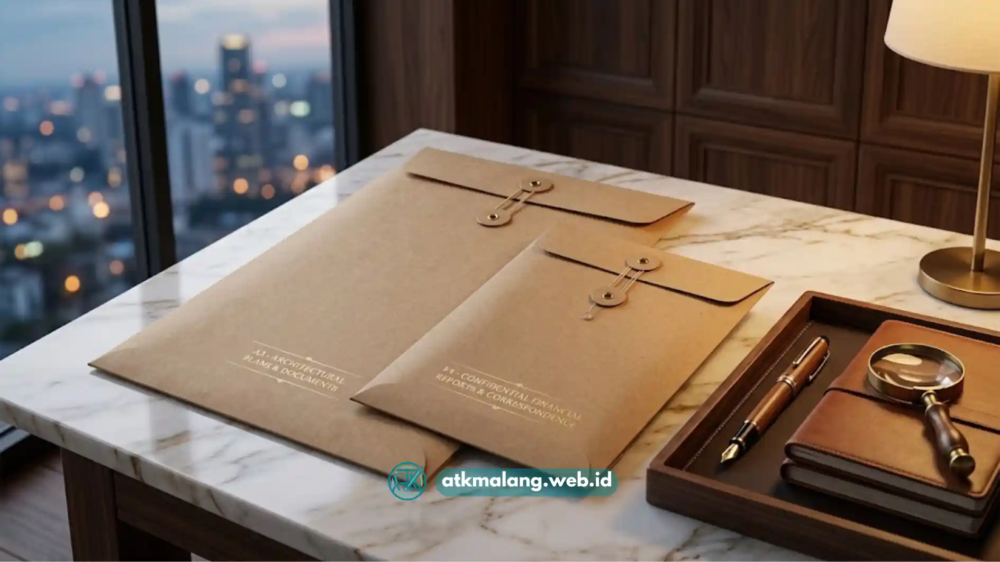

Grosir amplop cokelat besar di Malang umumnya menyediakan ukuran F4 dan A3 dengan perekat kuat. Ini sangat penting untuk kebutuhan kantor, percetakan, dan usaha yang membutuhkan stok secara rutin. Membeli secara grosir membantu menekan biaya per satuan dibandingkan pembelian eceran.
- Pembelian grosir amplop cokelat umumnya lebih hemat dibandingkan membeli eceran secara berulang.
- Ukuran F4 dan A3 menjadi pilihan populer untuk kebutuhan dokumen kantor berukuran besar.
- Perekat yang kuat penting untuk menjaga dokumen tetap aman selama pengiriman.
- Wilayah Malang memiliki cukup banyak toko dan distributor untuk pasokan dalam jumlah besar.
- Memilih pemasok yang tepat membantu menjaga kualitas dan ketersediaan stok berkelanjutan.
Daftar Isi
- 1. Mengapa Membeli Amplop Cokelat Secara Grosir Lebih Menguntungkan
- 2. Apa Perbedaan Kebutuhan Ukuran F4 dan A3 untuk Amplop Cokelat
- 3. Mengapa Perekat Kuat Penting untuk Amplop Cokelat Ukuran Besar
- 4. Apa yang Perlu Diperhatikan Saat Memilih Pemasok Amplop Cokelat di Malang
- 5. FAQ Seputar Grosir Amplop Cokelat
Mengapa Membeli Amplop Cokelat Secara Grosir Lebih Menguntungkan
Membeli amplop cokelat secara grosir umumnya lebih menguntungkan karena harga per satuan cenderung lebih rendah. Ini sangat bermanfaat dibandingkan pembelian eceran, terutama untuk kebutuhan Alat Tulis Kantor yang bersifat rutin. Selain faktor harga, pembelian dalam jumlah besar membantu memastikan ketersediaan stok terjaga.
Bagi usaha yang rutin mengirim dokumen, seperti kantor notaris, biro jasa, atau perusahaan, kebutuhan amplop cokelat cenderung stabil setiap bulannya dengan volume surat-menyurat yang tinggi. Dalam kondisi seperti ini, pembelian grosir membantu efisiensi anggaran sekaligus mengurangi risiko kehabisan stok.
Selain efisiensi biaya, pembelian grosir dari distributor lokal di Malang mempermudah proses pengiriman. Jarak yang lebih dekat membuat waktu tunggu barang sampai relatif lebih singkat dibandingkan memesan dari luar kota.
Apa Perbedaan Kebutuhan Ukuran F4 dan A3 untuk Amplop Cokelat
Ukuran F4 pada amplop cokelat dirancang untuk menampung kertas folio tanpa perlu dilipat sama sekali. Sedangkan ukuran A3 dirancang untuk dokumen berukuran lebih besar seperti gambar teknik, poster, atau kumpulan berkas. Kedua ukuran ini memiliki fungsi yang berbeda tergantung jenis dokumen yang akan dikirim.
Amplop ukuran F4 lebih umum dipakai untuk kebutuhan administrasi sehari-hari di kantor. Ini termasuk surat resmi, laporan kerja, atau berkas lamaran yang menggunakan kertas folio maupun A4. Ukuran F4 menjadi pilihan paling banyak dicari di toko Alat Tulis Kantor karena sesuai standar dokumen.
Amplop ukuran A3, di sisi lain, lebih sering dipakai oleh usaha percetakan atau konsultan desain. Instansi yang perlu mengirim dokumen besar tanpa melipatnya juga membutuhkannya. Karena dimensinya lebih besar, amplop A3 membutuhkan gramasi kertas yang lebih tebal agar tetap kokoh.

Perbandingan amplop cokelat ukuran F4 dan A3 untuk kebutuhan pengiriman dokumen yang berbeda.Mengapa Perekat Kuat Penting untuk Amplop Cokelat Ukuran Besar
Perekat yang kuat penting pada amplop cokelat ukuran besar karena beban dokumen di dalamnya cenderung lebih berat. Sehingga, penutup amplop perlu mampu menahan tekanan tanpa mudah terbuka selama proses pengiriman. Amplop besar dengan perekat lemah berisiko terbuka di tengah jalan, terutama via ekspedisi.
Kualitas perekat pada amplop cokelat umumnya dipengaruhi oleh jenis lem yang digunakan dan cara pengaplikasiannya. Amplop dengan lapisan perekat yang rata dan menempel sempurna cenderung lebih tahan terhadap tekanan. Ini sangat berbeda dibandingkan amplop dengan lapisan lem yang tipis atau tidak merata.
Bagi usaha yang mengirim dokumen dalam volume besar, memilih amplop dengan perekat kuat sejak awal sangat penting. Hal ini dapat membantu mengurangi risiko komplain akibat dokumen rusak atau amplop terbuka.
Apa yang Perlu Diperhatikan Saat Memilih Pemasok Amplop Cokelat di Malang
Memilih pemasok amplop cokelat di Malang sebaiknya mempertimbangkan kualitas bahan dan kelengkapan pilihan ukuran. Kemampuan memenuhi pesanan dalam jumlah besar secara konsisten juga tak kalah pentingnya. Faktor-faktor ini penting agar kebutuhan amplop kantor dapat terpenuhi secara berkelanjutan.
- Pastikan pemasok menyediakan variasi ukuran, minimal F4 dan A3, sesuai kebutuhan dokumen.
- Periksa kualitas gramasi kertas dan kekuatan perekat sebelum pemesanan dalam jumlah besar.
- Tanyakan ketersediaan stok secara rutin untuk menghindari keterlambatan pengiriman.
- Bandingkan harga grosir dari beberapa pemasok di Malang untuk mendapatkan penawaran terbaik.
- Perhatikan reputasi pemasok, misalnya melalui ulasan pelanggan atau riwayat kerja sama sebelumnya.
Untuk memahami perbedaan model penutup amplop sebelum menentukan pilihan, Anda sangat disarankan mencari tahu lebih dalam. Dapat dilihat pada artikel perbandingan amplop cokelat tali vs seal lem perekat. Sementara panduan menentukan ukuran dibahas pada cara memilih ukuran amplop cokelat sesuai kebutuhan dokumen.
Grosir amplop cokelat besar di Malang menjadi solusi efisien bagi kantor maupun usaha yang membutuhkan stok amplop secara rutin. Perekat yang kuat menjadi faktor krusial untuk menjaga keamanan dokumen selama pengiriman. Dengan pemasok yang tepat, kebutuhan Alat Tulis Kantor Anda dapat terpenuhi hemat dan berkelanjutan.